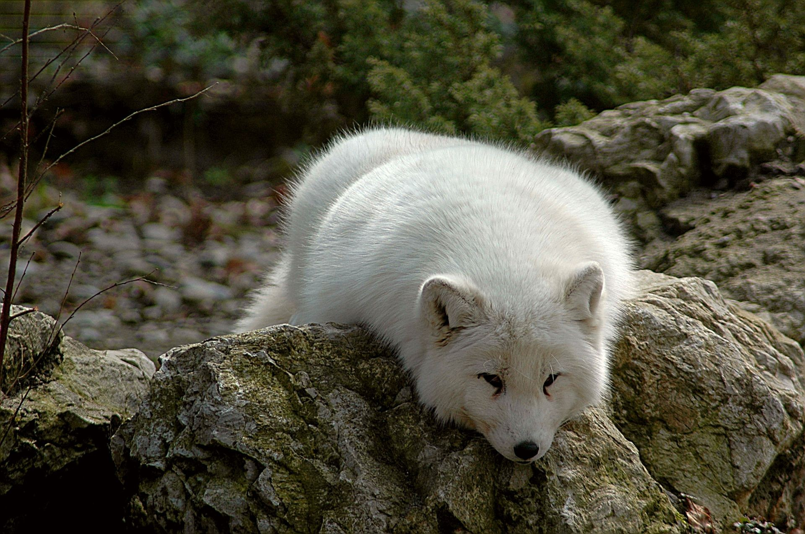
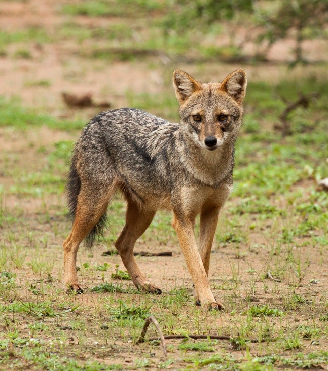

Allgemeines
Die Hunde (Canidae) sind eine Familie innerhalb der Überfamilie der Hundeartigen (Canoidea). Zu dieser Familie gehören verschiedene als „Fuchs“ und „Schakal“ bezeichnete Arten, Kojoten sowie die Wölfe, deren domestizierte Unterart (der Haushund) als Namensgeber der Gruppe dient.
Namensherkunft
Canidae, der wissenschaftliche Name der Familie, ist vom lateinischen Wort Canis („Hund“) abgeleitet, das zugleich auch der wissenschaftliche Name der Typusgattung dieser Familie ist. Eingedeutscht spricht man auch von „Caniden“, um zu betonen, dass nicht die Haushunde, sondern die gesamte Verwandtschaftsgruppe der Haushunde, Wölfe und Füchse gemeint ist. Das lateinische Wort für Wolf ist Lupus. Als Vertreter der Gattung Canis heißt der Wolf wissenschaftlich Canis lupus. Haushunde stammen vom Wolf ab und sind diesem genetisch noch so ähnlich, dass sie zur Spezies Canis lupus gezählt werden. Alle Haushunde werden als Unterart Canis lupus familiaris zusammengefasst. Dieser Artikel beschäftigt sich jedoch mit den Caniden als Ganzes.
Verhalten

Allgemeingültige Aussagen über das Verhalten von Caniden lassen sich kaum treffen, da sich die einzelnen Gattungen und Arten zu sehr unterscheiden. Beispielsweise sind zwar alle Caniden per Definition Carnivoren und weisen daher alle Jagd- und Tötungsverhalten auf, jedoch unterscheidet sich dieses bereits zwischen Wölfen und Haushunden erheblich. Die unterschiedlichen Verhaltensweisen prägen sich beispielsweise bei Wölfen und Füchsen bereits zwischen der vierten und fünften Lebenswoche aus. Erik Zimen beobachtete bei Welpen, dass Füchse bei der Fütterung die Futterbrocken zunächst auflesen, in der Umgebung vergraben und erst dann mit dem Verzehr beginnen; junge Wölfe verschlingen dagegen so viel Nahrung wie möglich und beginnen erst danach, Futterreste zu vergraben. Als generell ähnliche Verhaltensmuster bei allen Caniden beschreibt Michael W. Fox die Einleitung sozialer Begegnungen durch gegenseitige Untersuchung von Genital- und Analzone sowie teilweise auch von Ohren, Maul und Analdrüse. Das Beriechen der Schwanzdrüsen-Region wurde vor allem bei Rot-, Polar- und Graufüchsen beobachtet, seltener jedoch bei Präriewölfen und praktisch überhaupt nicht beim Haushund, da bei diesem die Schwanzdrüse nur selten vorhanden ist.
Teilweise werden Verhaltensmuster auch zwischenartlich erkannt. Fox beschreibt beispielsweise eine erfolgreiche Spielaufforderung an einen Chihuahua durch einen Präriewolf, gegenseitige Unterwürfigkeit zwischen jungen Kojoten und Wölfen sowie Spielsequenzen zwischen einem erwachsenen Wolf und einem Rotfuchs.
Einige Hundearten
- Afrikanischer Goldwolf (Canis lupaster)
- Goldschakal (Canis aureus)
- Kojote (Canis latrans)
- Wolf (Canis lupus), einschließlich Haushund und Dingo
- Rotwolf (Canis rufus)
- Äthiopischer Wolf (Canis simensis)
